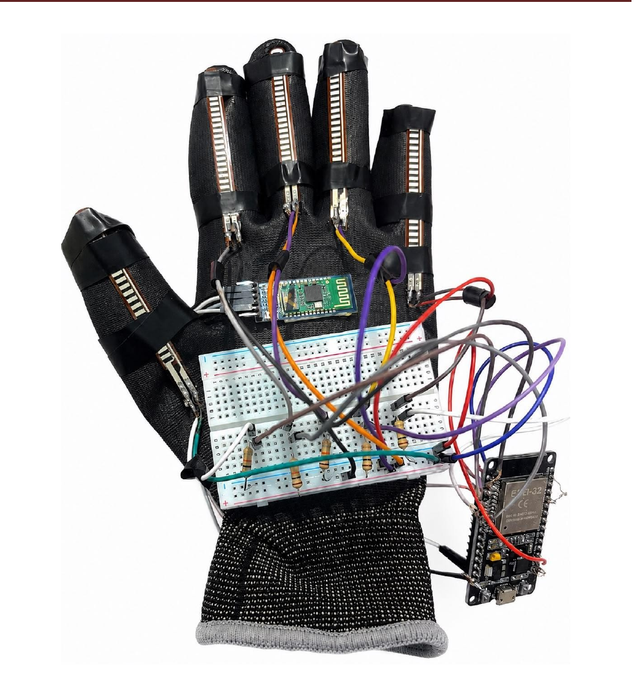
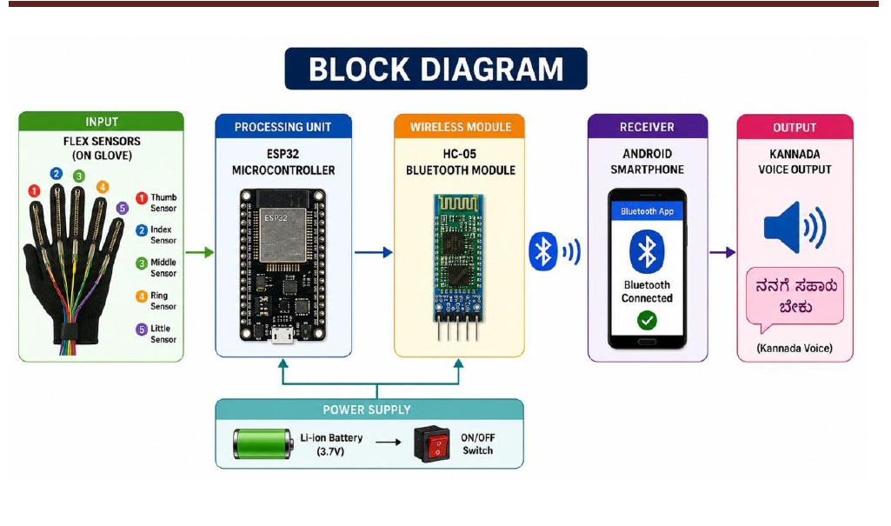

✋
Gesture sensing
Five flex sensors mounted on the fingers change resistance as the fingers bend. The ESP32 reads these analog signals.
A sensor-equipped glove that reads predefined finger-bending patterns, processes them on an ESP32, sends the recognized message over HC-05 Bluetooth, and enables Kannada voice output through an Android smartphone.

The project is designed around a simple chain: sense the hand, classify a predefined gesture, transmit the message, and make it audible.
Five flex sensors mounted on the fingers change resistance as the fingers bend. The ESP32 reads these analog signals.
The ESP32 compares sensor combinations against predefined conditions to identify the implemented gesture.
The recognized message is sent to an Android smartphone through HC-05 Bluetooth and converted to Kannada speech using Text-to-Speech.
The documented working flow is Flex Sensors → ESP32 → HC-05 → Smartphone → Kannada Voice Output.

Five flex sensors detect finger bending.
ESP32 reads values and matches a predefined pattern.
HC-05 sends the recognized message wirelessly.
Android receives the message and produces Kannada voice output.
Select one of the 15 implemented gesture combinations. The interface shows the project-defined message and can speak the displayed text using your browser.
This web control is a presentation/demo interface. It does not claim to receive live Bluetooth data from the glove.
These are the gesture combinations and message strings documented for the completed prototype.
The following components and costs come from the project's documented component table.
| Component | Qty. | Cost |
|---|---|---|
| Total documented cost | ₹4,000 | |
Dual-core 240 MHz microcontroller with Wi-Fi and Bluetooth support, used to read and process the sensor inputs.
2.2-inch bend sensors mounted on the fingers to capture finger movement.
Bluetooth V2.0+EDR module documented at 9600 bps for the glove-to-phone communication link.
The final prototype photograph below is taken from the project's report and shows the glove, five sensors, ESP32, HC-05, breadboard, wiring and power setup.
These are future improvements documented in the project report.
Increase the number of supported gestures for richer communication.
Explore AI/ML-based gesture classification using collected sensor data.
Add additional regional and international spoken-language outputs.
Replace the terminal-style phone workflow with a dedicated user interface.
Explore direct voice output without requiring a smartphone.
Add emergency alerts and location sharing for safety-focused use cases.
Reduce component size to improve comfort and portability.
Move toward a compact design for longer-term practical use.